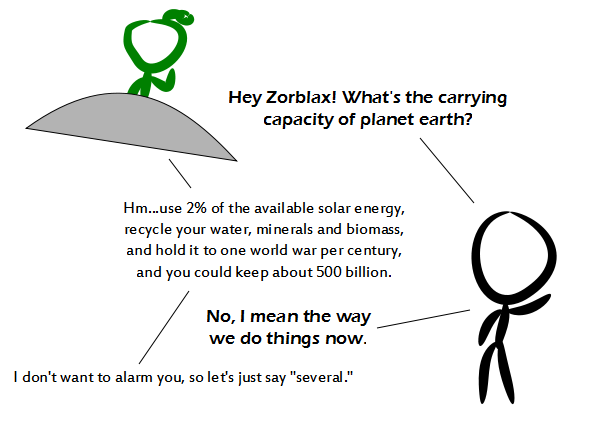

Comic JK 833
When I Feel Like It
⇤
<
?
>
⇥

⇤
<
?
>
⇥
Forum
.
RSS
.
Digg
.
Facebook
.
Reddit
.
Twitter
.
Stumbleupon
Enter your thoughts on number 833 here. Please, no spamming, trolling, or telling people the world is too full to support them. Maybe if your mother stopped breeding with dorky college boys, this wouldn't be so much of a problem. > +2 Is 500 billion better than 5? I mean, is there any reason we should improve our capacity instead of reducing the population? > No reason we can't do both. >> It's not inherently better to have either more or fewer people (within a certain range), but all the methods for controlling population growth raise some moral questions. >>> It isn't inherently better or worse, but given our technology level, it is easier to achieve sustainable consumption with a smaller population. Also, what about methods such as improving women's rights & the standard of living, or increasing the availability of contraception? The First World population crash isn't the result of totalitarian control over peoples genitals. >>> With more people, and all other things being equal, there would be more genius level thinkers. Humanity would unravel the mysteries of the universe quicker. And yes, I think understanding the fundamental nature of the universe is inherently better than not understanding. >>> Where's the moral dilemma in "no glove, no love"? Unless you're, y'know, Catholic or something - in which case I withdraw the question, since logic is apparently not going to enter into the conversation. >>>> wonders when Catholic became synonymous with Fundamentalist >>>>> The no-condom thing isn't Fundamentalist, it's Catholic. Granted, the Catholic church has since changed their views on it, but for many years the church was anti-condom because they said sperm counted as people. The same reason they're now anti-abortion. >>>> The problem comes when imperfect methods like condoms fail and then the question comes up whether or how to enforce population control after it's too late for prevention. >>>> What about parents who *want* to have a bunch of kids? How can you morally tell them that there is a maximum limit of kids they can have? >>>>> Simple, you say "Fuck you, figure out whats wrong with your life that you would want a bunch of kids and fix that or get over it" >>>>>> ...Or maybe they just want to have a bunch of kids. I don't see why its wrong to want to have a good number of children, as long as you can reasonably support them. Its a personal choice, just like not having kids at all, and we certainly wouldn't argue not wanting to have kids means you have some secret psychological problem you need to deal with. DAT INDENTATION! World wars would actually reduce the population, thus allowing for greater expansion. Besides, we haven't had any world war this century, so combined with the previous one it gives us an average of one world war per century. >Just credit them to earlier centuries, and we have some catching up to do. >>I think Zorblax is saying how many humans we could actually keep alive at once. World wars reduce this number. >>>World wars also interfere with the other points he mentioned. >>>>You're all forgetting what happened after the last world war ended.... soldiers came home and made babies like bunnies. Our net loss would have to be greater than the boom produced by the victorious soldiers... >>>>>> That happened because one country was fabolously wealthy and suffered very little casualties relative to the total pop. Russia or Germany didn't have such a good rebound. Oh... it's in units of people (not all living things). >What is the carrying capacity of spaceship earth, in tons of cargo? >>six, i mean do you realize how much fuel we'll need to move this thing? >>>Guess we will need to use an Orion-style propulsion system. Tax children, that would probably decrease population growth. > Lol... Where i live, the government pays a salary to every unemployed mother, per kid, up to 5 kids. Wish it would be the other way around. >> And where do you live? >>> Sounds like USA. >>>> Either that or the Europe. >>>>> probably sweden... they should tax the bitchs Without regard to sanitation or comfort the entire population of the world could be jammed into florida shoulder to shoulder... > I hear this comparison all the time from people who say that overpopulation is not a problem (and sometimes argue that we have an underpopulation problem, no idea how they figure that one) and it's an absolutely absurd, useless, meaningless statement. The volume that a person takes up is unimportant. What matters is how much resource the planent can sustain and how much resource each person consumes. >>its actually more of a case of people taking to much land for selfish reasons. It would be quite possible to eliminate starvation in a decade if everyone could cooperate, but that in itself is an inane statement as you petty little humans get into so many wars and territorial disputes even genocide over stupid little things and perceived wrongs. not to mention crime an drug rates as well as poverty rates in even your most developed countries. you people think about this too much lol All you'd need to to do increase the capacity 100 fold is to get rid of your fat mother who keeps consuming all the resources. I'm in favor of 500 billion people, imagine how easy it'd be to find servers for old multiplayer games that no one but a small percentage still plays. -why do all the stupid aholes sound like they are from america? Oh wait they are.